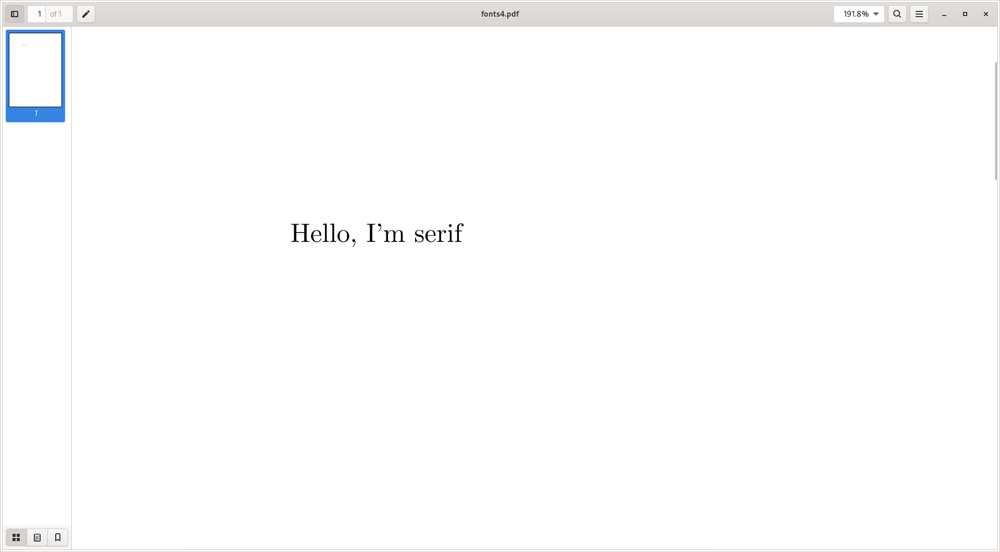

Frans's Tech Site
Nov 28, 2021
Table of Contents
- Introduction to Latex
- Compiling a Latex Document
- The Preamble
- Document Environment
- Arguments
- Fonts
- Font Families
- Changing the Font Typeface
- Font Styles
- Titles
- Changing the Sections, Chapters and More
- Line Spacing
- Line Breaks
- Alignment
- Indentation
- Tables
- Lists
- Paper Sizes
- Margins
- Landscape
- Custom Commands
- Environments
- Creating a Ruler
- Images
- Sections
- Table of Contents
- Labels and References
- Links
- Comments
- The “the” Commands
- Packages
- Final Word
Introduction to Latex
Latex is software that is intended for writing articles, books, documents, presentations and more. You have probably used Microsoft Word, which is a very popular word processor where you can write articles and books. Latex is very different in the way it makes and formats text, but both Latex and Word share the same purpose: To make formatted, nice text. Latex is common in academia and widely used to write scientific documents, and is great for writing math and physics equations and symbols. Latex is free and open-source software and is available on a slew of different platforms. Latex is extremely customizable and you can do a lot with it, but it does have a somewhat high learning curve compared to something like Word. This tutorial is meant to help you get started writing in Latex and is not a comprehensive tutorial.
There are some benefits that Latex offers over Microsoft Word:
- Free(both as in freedom and price)
- Support for a host of math symbols and older languages
- Labels and references
- Easily convertable to different formats
- You can use any editor you want
Start by installing Latex. If you are on Linux, just install it with your package manager. If you are on Windows or Mac check this site out. The good thing with Latex is that you can use any editor you want. I use vim, for example. It works fine for me. I will be using pdflatex and xelatex to convert my documents to a PDF. You are free to use whatever you want. I will try to mention if a specific package requires a specific Latex engine to compile.
Compiling a Latex Document
If you are either using pdflatex or xelatex, simply do pdflatex name-of-my-latex-document.tex or xelatex name-of-my-latex-document.tex. This will generate a pdf with the same name.
I haven’t used Latex on either Windows or Mac, so I don’t know how it works on those platforms.
The Preamble

Every Latex document is divided into two main parts — the preamble and the document environment. The premable is the top part. That is where you’re going to specify what document you are going to write, what packages to include among other things.
You can right click on the image and choose “Open Image in New Tab” to view it in full size.
To specify what type of document you’re going to use, use the \documentclass{} command at the top of your document. These are the most common arguments:
For articles:
\documentclass{article}
For books:
\documentclass{book}
For presentations:
\documentclass{beamer}
I’ll be going with \documentclass{article} for most of this tutorial.
What are packages then? Packages include extra functionality and commands that you can use in Latex. Packages allow you to get huge fonts, embed pictures and use math symbols and so on.
For instance, to adjust the margins of your document, include the geometry package:
\usepackage{geometry}
To use bigger fonts than 10pt, 11pt or 12pt, include the extsizes package:
\usepackage{extsizes}
To embed graphics, like pictures, include the graphicx package:
\usepackage{graphicx}
I will talk more about these later in the guide, these are just a few examples. I will also have a small list of packages and their uses in the end of this tutorial.
Document Environment
Remember when I said that Latex documents are divided into two parts? This is the second part, the meat of the document. The document environment is the part where you type the actual text. It starts with \begin{document} and ends with \end{document}
\begin{document}
Hello, world!
This is some text.
\end{document}

Arguments
\documentclass[]{}
In Latex, the required arguments go inside the { } while optional arguments go inside [ ].
For instance, you can specify that you are going to be writing a book and that the font size will be 12 by giving the documentclass two arguments:
\documentclass[12pt]{book}
Fonts
The default font size in Latex is 10pt. If you wish to have larger font sizes than 12pt, you have to include the extsizes package.
There are premade font sizes like \tiny \large \Large \LARGE \huge and \Huge that you can employ.
Hello big, beautiful, {\Large large} world.

Font Families

The three basic font families are Roman text, Sans serif text and typewriter text. The default is Roman.
\textrm{Roman(serif) text}
\textsf{Sans serif text}
\texttt{Typewriter text}
 Ignore my f’d up syntax highlighter.
Ignore my f’d up syntax highlighter.
You can switch your entire document to one of the above with the following command:
This changes the whole document to a serif font:
\renewcommand{\familydefault}{\rmdefault}
This changes the whole document to a sans serif font:
\renewcommand{\familydefault}{\sfdefault}
This changes the whole document to a typewriter(monospace) font:
\renewcommand{\familydefault}{\ttdefault}


As you can see, the Roman looks exactl like what we had before. That’s because it is the default.
Typewriter(monospace) text is text where every letter has the same width.
Changing the Font Typeface
This can be done by first including a package that includes the typeface and then choosing between serif, sans serif or monospace.
This changes the typeface of the entire document to Helvetica:
\usepackage{helvet}
\renewcommand{\familydefault}{\sfdefault}
Font Styles
\textbf{I'm bold!}
\textit{I'm italicized!}
\underline{I'm underlined!}
You can also use more than one modifier at the same time like so:
\textbf{\textit{I'm bold and italicized!}}
\textbf{\underline{I'm bold and underlined!}}
Make sure you close the curly brackets, otherwise Latex will go crazy and refuse to compile.
The \emph is used to add emphasis to a word or phrase. It will look different depending on the situation you use it in, but usually it looks similar to italics.
\emph{I'm emphasized}
Ignore my f’d up syntax highlighter.
You can also use strikethrough text by including the ulem package:
\usepackage{ulem}
\sout{I'm strikethrough text!}
Titles
Latex uses the following three commands to make a title, though only the first two are required.
\title{The best document on the planet}
\author{Frans}
\date{January 1}
Note: The date is optional. Latex will automatically put the date in your title.
In order to tell Latex to make the title, use the \maketitle command. Latex will then make a title based on the three commands that we issued(\title, \author and \date).

Changing the sections, chapters and more
You can change how the sections or chapters look like with the titlesec package.
\usepackage{titlesec}
The titlesec package includes a couple of useful things, such as \titleformat.
\titleformat{\section}{\huge\bfseries}{\thesection}{1em}{\vspace{2em}}
The first argument takes whatever you want to format. I’ve chosen \section in this case. The next argument takes the actual formatting. I’ve made the font size huge and bold. You can leave out the 3rd and last argument. The {1em}(or whatever size you want) has to be there. It specifies the space between the section number and the section name.
Line Spacing
You can add both vertical and horizontal spacing between any text.
This will insert some space between the “Hello world!” and “Some random text”:
Hello world!
\vspace{3em}
Some random text.


The \hspace{} is used to create horizontal spacing.

Line Breaks
Using \\ will make a newline.
Another way of making a newline is by putting two newlines:
Hello
World


There’s also the \break keyword that makes a newline:
Alignment
You can have left justified, centered, or right justified text in Latex.
\begin{flushleft}
Left-justified text here.
\end{flushleft}
\begin{center}
Centered text here.
\end{center}
\begin{flushright}
Right-justified text here.
\end{flushright}


Don’t ask me why it’s named “flushleft” and “flushright”. I have no idea.
Indentation
Latex will by default indent every line that starts a new paragraph.
You can change the default behaviour by issuing a \noindent before the text.
 blindtext is just something that prints random paragraphs in case you are wondering.
blindtext is just something that prints random paragraphs in case you are wondering.


Tables
Tables can be made by using the tabular environment:
\begin{tabular}{alignment}
The body of the table.
\end{tabular}

Lists
There are two types of lists in Latex: Unordered and ordered.
To create an unordered list, use the \begin{itemize} command:
\begin{itemize}
\item First item
\item Second Item
\item Third Item
\begin{itemize}
\item First sub-item
\item Secon sub-item
\end{itemize}
\end{itemize}


To create an ordered list, use the \begin{enumerate} command:
\begin{enumerate}
\item First Item
\item Second Item
\begin{enumerate}
\item First Sub-item
\item Second Sub-item
\end{enumerate}
\end{enumerate}
In the unordered list, you can specify what kind of list marker you want by giving an argument to the \item command, like so:
\item[$\rightarrow$]


Paper sizes
The two common sizes are A4 and letter size paper.
You can set which paper size you want in the \documentclass command. \documentclass[ option ]{article}
You can also make your own paper sizes by giving a couple of arguments when including the geometry package:
\usepackage[paperwidth=, paperheight= ]{geometry}
Margins
Just like you can specify what paper size you want, you can specify the margins that you wish to have. There are two ways of doing this:
\usepackage[margin=size]{geometry}
Or:
\usepackage[top=size, bottom=size, left=size, right=size]{geometry}


Landscape
In order to change the layout of your document to landscape, you have to include the geometry package and give it the argument “landscape”.
\usepackage[landscape]{geometry}
\begin{landscape}
This should be landscape!
\end{landscape}
If you are using pdflatex, you have to include the pdflscape instead:
\usepackage{pdflscape}

Custom Commands
You can create your own custom commands in Latex by using the \newcommand command. This is powerful and saves you a ton of typing.
\newcommand{\nameofcommand}{what to execute}
\newcommand{\fin}{Finland}
Make writing bold easier:
\newcommand{\bo}{\textbf}
Now you don’t have to type \textbf everytime you want bolded text. Must feel good to save four keystrokes, am I right?

You can also redfine a command in Latex by using \renewcommand:
\renewcommand{\nameofcommand}{whattoexecute}
Now every time we use \section, the \Huge and \bf will automatically apply to it.
Environments
\begin{environment}
...
\end{environment}
We’ve already talked about the document environment, but there are other environments that you can use. An environment is just a section that does something with the text.
For example, this environment centers stuff:
\begin{center}
...
\end{center}


A table can be made with the tabular environment:
\begin{tabular}
...
\end{tabular}
We’ve also talked about the flushleft and flushright environments.
Creating a Ruler
\rule{5pt}{0.75pt} can be used to create a horizontal ruler. The first argument takes the width of the rule, while the second argument takes the thickness of the ruler.


Images
Images can be embedded into Latex by including the graphicx package and using the \includegraphics command:
\usepackage{graphicx}
\includegraphics{mypicture.png}
\includegraphics[width=10cm, height=5cm]{mypicture.png}
The “angel=-90” just changes my pictures orientation. It is not required.
 My doggy!
My doggy!
If you want to center the image, move the \includegraphics command inside a \begin{center} and \end{center} environment.
Sections
There are three types of sections in Latex: \section, \subsection, and \subsubsection.
\section{Section}
\subsection{Subsection}
\subsubsection{Subsubsection}


The nice thing about Latex is that it will automatically number the section headings for you. You can of course remove the numbering if you prefer to go without them.
Table of Contents
Table of Contents, or ToC for short, can be done by typing:
\tableofcontents
This will create a table of contents. You might have to compile the document twice or thrice in order for it to completely work. Latex has to first compile and count how many chapters you have, and then the second time it will complete the toc.
\newpage is used to go to a new page if you are wondering.
Labels and References
This is super handy in Latex. Let’s say you are referring to a section in your book, and suddenly you make a new section before it. Well, if you referred to the section as Section 4, it is now Section 5. Labels and references solve this nuisance.
The chapter \ref{ghost} is about the ghost.
\chapter{The scary ghost\label{ghost}}
Now the \ref{ghost} will get substituted by whatever section number \section{ghost} happens to be, even if it changes.


Note: You have to compile your document twice in order for this to work. Latex won’t know what \ref{whatever} refers to the first time it compiles, it only knows that the second time it compiles the document.
Links
More specifically, hyperlinks.
To create a hyperlink, include the hyperref package. This will turn the table of contents into a series of hyperlinks. Also, all the \ref{} in the document will get turned into hyperlinks.
\hyperref[ label ]{ Link text } can be used to create custom links with custom text.
\ref*{} can be used to make a ref and avoid it becoming a link.
The hyperref package also includes a \href{ url }{text} command to link to website on the internet.

Comments
Comments in Latex are done by using the % sign, like so:
\begin{center} % Everything in this section will be centered.


The “the” Commands
There are some commands that start with “the”. Here are the most common ones:
\thepage — prints the current page number wherever you use it.
\thesection — prints the current section that you are in.
\thechapter — prints the current chapter that you are in.
\theauthor — prints the author’s name.
Note: For \theauthor to work, you have to include the titling package.

Packages
extsizes and anyfontsize — includes bigger fonts and such.
ulem — allows you to make strikethrough text.
amsmath — math stuff.
tabularx — better tables.
enumitem — customize your lists even further.
lastpage — total number of pages.
libertine — libertine fonts.
fancyhdr — fancy headers.
These are just some of the ones that I have bumped into while reading about Latex online. There are thousands of more packages out there.
Final Word
To wrap it all up, Latex is huge. I’ve barely scratched the surface of Latex in this short tutorial. These are just the things you have to know to get started. Now that I am done with the tutorial, I will share a couple of tips and tricks that might help you when using Latex.
{\LaTeX}This writes Latex in the “nice” way.Always use { } when formatting words or sentences. E.g.
Hello \textbf{beautiful} world. It is used as a separator to avoid formatting errors like missing whitespace and such.Escaping a backslash can be done with
\textbackslash. Because \ makes a new line, you can’t use it to escape the backslash.